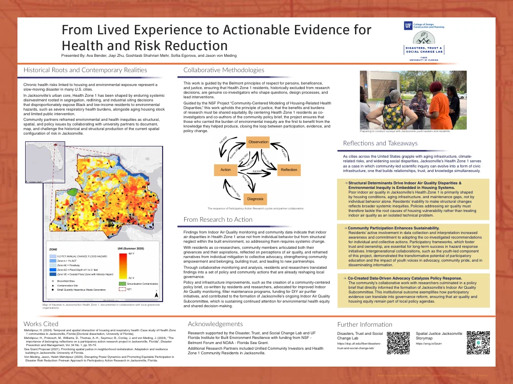
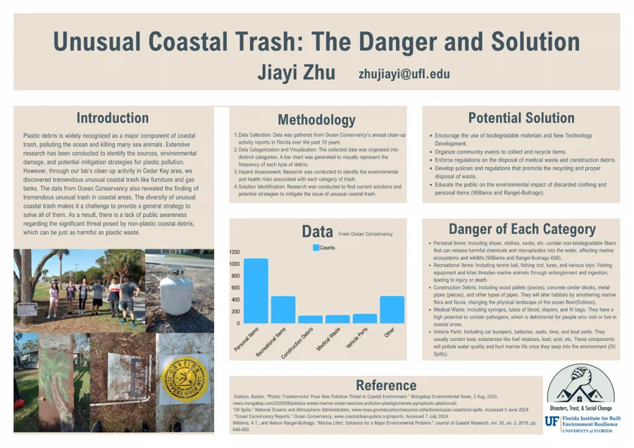

2026 · Sole author
Beyond construction-debris counts: Unequal coverage in volunteer cleanup records before and after hurricanes
Jiayi Zhu. A study of unequal coverage in volunteer cleanup records across four southeastern states.
Manuscripts and conference posters, with my role and the associated research project.
Jiayi Zhu. A study of unequal coverage in volunteer cleanup records across four southeastern states.
I surveyed residents in Jacksonville’s Health Zone 1 about housing conditions and respiratory health. Residents and researchers drew on these accounts and indoor air quality measurements to write a community policy brief.

I analyzed ten years of Florida volunteer cleanup records and grouped unusual debris into six categories.

I led a three-person team studying rural and urban differences in access to healthcare.